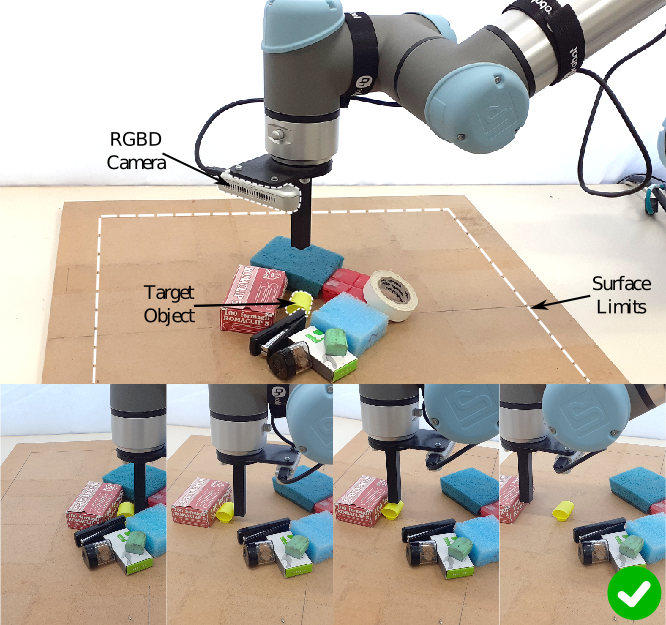

I am a PhD student at Aristotle University of Thessaloniki working with Dr. Sotiris Malassiotis and Prof. Zoe Doulgeri at Automation and Robotics Lab, AUTh. Prior to this I was an undergraduate student in the School of Electrical and Computer Engineering in the Aristotle University of Thessaloniki in Greece, where I worked with Prof. Zoe Doulgeri. My research focuses on robot manipulation and deep learning, to enable machines to intelligently interact with the physical world and improve themselves over time.
News
- June 2022: Our paper 'Learning Push-Grasping in Dense Clutter' was accepted for publication in IEEE Robotics and Automation Letters (RA-L).
Publications

IEEE Robotics and Automation Letters (RA-L), 2022
Abstract•Project page•Paper•Code•Video•Bibtex
Robotic grasping in highly cluttered environments remains a
challenging task due to the lack of collision free grasp affordances. In such conditions, non-prehensile actions could help to increase such affordances. We propose a multi-fingered push-grasping policy that creates enough space for the fingers to wrap around an object to perform a stable power grasp, using a single primitive action. Our approach learns a direct mapping from visual observations to actions and is trained in a fully end-to-end manner. To achieve a more efficient learning, we decouple the action space by learning separately the robot hand pose and finger configuration. Experiments in simulation demonstrate that the proposed push-grasping policy achieves higher grasp success rate over baselines and it can generalize to unseen objects. Furthermore, although training is performed in simulation, the learned policy is robustly transferred to a real environment without a significant drop in success rate.
@ARTICLE{9815129,
author={Kiatos, Marios and Sarantopoulos, Iason and Koutras, Leonidas and Malassiotis, Sotiris and Doulgeri, Zoe},
journal={IEEE Robotics and Automation Letters},
title={Learning Push-Grasping in Dense Clutter},
year={2022},
volume={},
number={},
pages={1-8},
doi={10.1109/LRA.2022.3188437}}

IEEE Robotics and Automation Letters (RA-L), 2021
Abstract•Project page•Paper•Code•Video•Bibtex
Prehensile robotic grasping of a target object in clutter is challenging because, in such conditions, the target touches other objects, resulting to the lack of collision free grasp affordances. To address this problem, we propose a modular reinforcement learning method which uses continuous actions to totally singulate the target object from its surrounding clutter. A high level policy selects between pushing primitives, which are learned separately. Prior knowledge is effectively incorporated into learning, through action primitives and feature selection, increasing sample efficiency. Experiments demonstrate that the proposed method considerably outperforms the state-of-the-art methods in the singulation task. Furthermore, although training is performed in simulation the learned policy is robustly transferred to a real environment without a significant drop in success rate. Finally, singulation tasks in different environments are addressed by easily adding a new primitive and by retraining only the high level policy.
@ARTICLE{modularrl21,
author={I. {Sarantopoulos} and M. {Kiatos} and Z. {Doulgeri} and S. {Malassiotis}},
journal={IEEE Robotics and Automation Letters},
title={Total Singulation with Modular Reinforcement Learning},
year={2021},
volume={},
number={},
pages={1-1},
doi={10.1109/LRA.2021.3062295}}

IEEE Transactions on Robotics (T-RO), 2020
Abstract •Paper•Code•Bibtex
Multi-fingered robotic hands offer stable grasping for a wide variety of objects, yet grasp planning with these hands is more challenging due to the high dimensionality of the search space. We propose a method for grasping unknown objects from cluttered scenes using a noisy point cloud as input. Our approach is based on a shape complementarity metric. A fast algorithm for finding a small set of potential grasps is proposed followed by a local shape completion method to infer the occluded parts of the object. Finally, we propose an optimization-based refinement of the hand poses and finger configurations to achieve a power grasp of the target object. The proposed approach is validated extensively both on a simulated and a real world environment. We demonstrate that the proposed grasp planning algorithm produces stable grasps even in heavily dense clutter. Finally, our experiments indicate improved grasp success rate over algorithms that employ precision grasping in the same scene.
@ARTICLE{9256325,
author={Kiatos, Marios and Malassiotis, Sotiris and Sarantopoulos, Iason},
journal={IEEE Transactions on Robotics},
title={A Geometric Approach for Grasping Unknown Objects With Multifingered Hands},
year={2021},
volume={37},
number={3},
pages={735-746},
doi={10.1109/TRO.2020.3033696}}

IEEE International Conference on Robotics and Automation (ICRA), 2020
Abstract•Project page•Paper•Slides•Code•Video•Bibtex
Extracting a known target object from a pile of other objects in a cluttered environment is a challenging robotic manipulation task encountered in many robotic applications. In such conditions, the target object touches or is covered by adjacent obstacle objects, thus rendering traditional grasping techniques ineffective. In this paper, we propose a pushing policy aiming at singulating the target object from its surrounding clutter, by means of lateral pushing movements of both the neighboring objects and the target object until sufficient 'grasping room' has been achieved. To achieve the above goal we employ reinforcement learning and particularly Deep Q-learning (DQN) to learn optimal push policies by trial and error. A novel Split DQN is proposed to improve the learning rate and increase the modularity of the algorithm. Experiments show that although learning is performed in a simulated environment the transfer of learned policies to a real environment is effective thanks to robust feature selection. Finally, we demonstrate that the modularity of the algorithm allows the addition of extra primitives without retraining the model from scratch.
@inproceedings{splitdqn20,
title={Split Deep Q-Learning for Robust Object Singulation},
author={Sarantopoulos, Iason and Kiatos, Marios and Doulgeri, Zoe and Malassiotis, Sotiris},
booktitle={2020 IEEE International Conference on Robotics and Automation (ICRA)},
pages={6225--6231},
year={2020},
organization={IEEE}
}

IEEE International Conference on Robotics and Automation (ICRA), 2019
Abstract•Project page•Paper•Poster•Code•Video•Bibtex
Grasping objects in a cluttered environment is challenging due to the lack of collision free grasp affordances. In such conditions, the target object touches or is covered by other objects in the scene, resulting in a failed grasp. To address this problem, we propose a strategy of singulating the object from its surrounding clutter, which consists of previously unseen objects, by means of lateral pushing movements. We employ reinforcement learning for obtaining optimal push policies given depth observations of the scene. The action-value function(Q-function) is approximated with a deep neural network. We train the robot in simulation and we demonstrate that the transfer of learned policies to the real environment is robust.
@inproceedings{singulation19,
author={M. {Kiatos} and S. {Malassiotis}},
booktitle={2019 International Conference on Robotics and Automation (ICRA)},
title={Robust object grasping in clutter via singulation},
year={2019},
volume={},
number={},
pages={1596-1600},
doi={10.1109/ICRA.2019.8793972}}
}